In this project, I recovered homographies between photos, used them to rectify two angled signs, and stitched three pairs of photos into mosaics. The homography solver, the inverse warping, both interpolation methods, and the blending are all implemented by hand in NumPy.
A.1 · Shoot the Pictures
For each mosaic I took two overlapping photos from one spot and rotated the camera between them, so that the two views share approximately the same center of projection and are related by a homography.
Scene 1 · Locker hallway

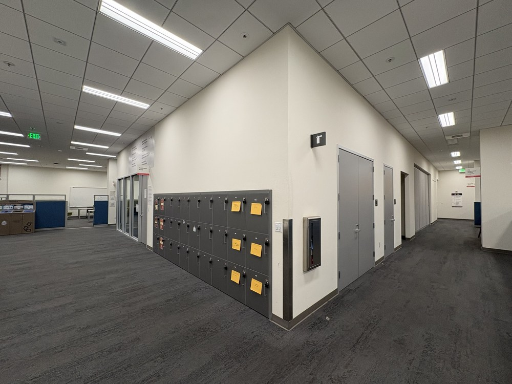

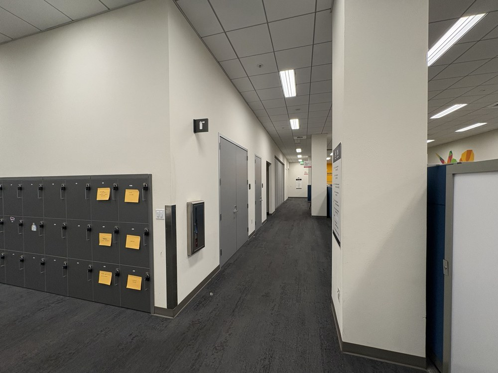
Scene 2 · Bulletin-board hallway

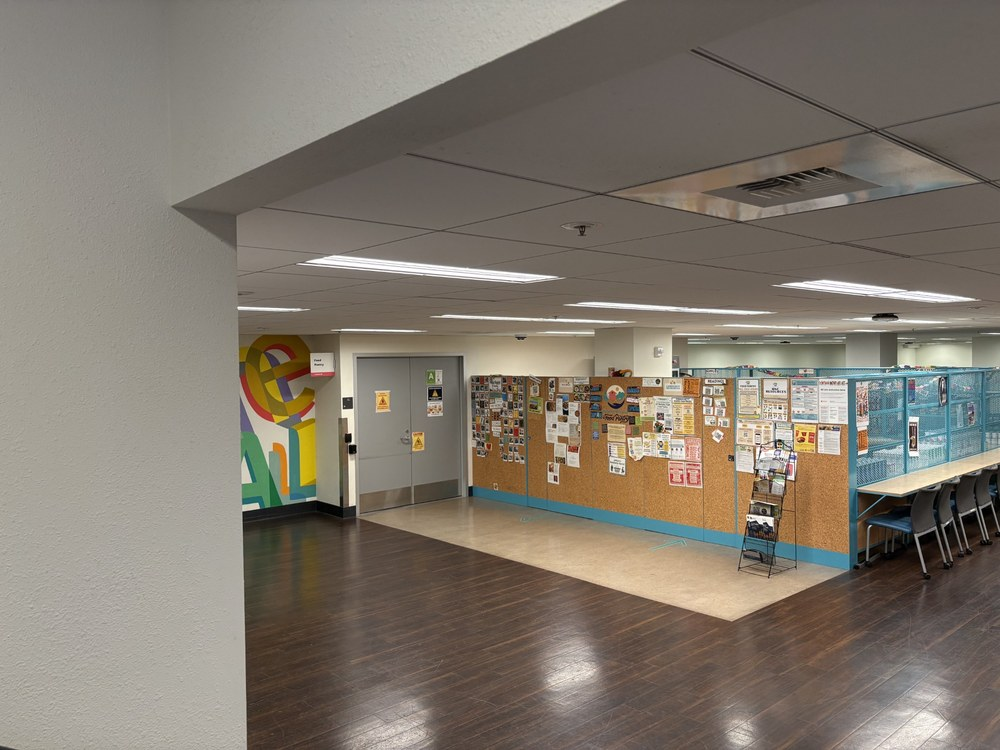

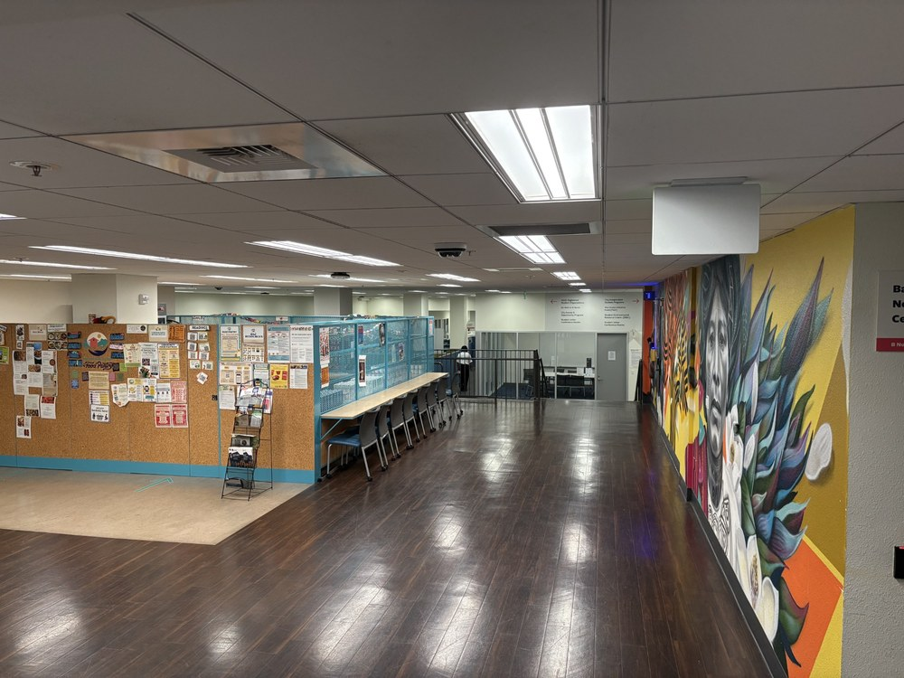
Scene 3 · Exterior building

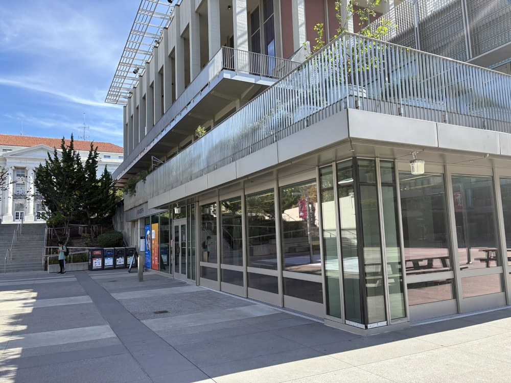

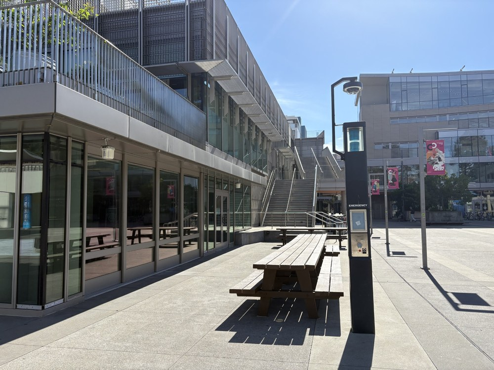
A.2 · Recover Homographies
A homography maps a point (x, y) to (u, v) up to a scale w:
[w·u] [a b c] [x] [w·v] = [d e f] [y] [ w ] [g h 1] [1]
Fixing the bottom-right entry to 1 leaves eight unknowns. Substituting w = gx + hy + 1 and rearranging gives two linear equations per correspondence:
[x y 1 0 0 0 -u·x -u·y] [a b c d e f g h]ᵀ = u [0 0 0 x y 1 -v·x -v·y] [a b c d e f g h]ᵀ = v
computeH(im1_pts, im2_pts) stacks these two rows for every correspondence into a system A h = b. Four correspondences determine h exactly. With more than four, the system is overdetermined, so I solve it in the least-squares sense with np.linalg.lstsq, append the fixed 1, and reshape h into the 3×3 matrix H.
Finding the correspondences
Instead of clicking points by hand, I used OpenCV only to detect SIFT keypoints and compute their descriptors, matched the descriptors, and kept the matches that passed Lowe's ratio test (0.8). Many of these candidates are still wrong, so as a robustness step I wrote my own RANSAC: 3000 times, pick 4 random matches, fit H with computeH, and count how many matches land within 3 pixels of where H predicts. I keep the largest consistent set, then recompute the final H from all of those inliers with the same least-squares computeH. Matching runs on the full-resolution photos. The points are then scaled by 0.5, and all warping is done at half resolution (1024×768).
| Mosaic | Candidate matches | RANSAC inliers | Mean error (px) | Median error (px) |
|---|---|---|---|---|
| 1 | 437 | 237 | 0.65 | 0.52 |
| 2 | 1785 | 1514 | 0.68 | 0.58 |
| 3 | 503 | 38 | 0.84 | 0.73 |
Scene 3 keeps only 38 of 503 matches because the glass facade and the railing repeat, so many descriptor matches pair up the wrong window or post. The 38 inliers that remain all agree to within a pixel.
Mosaic 1 correspondences
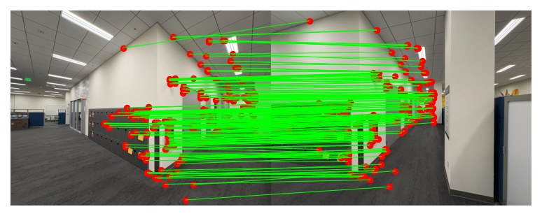

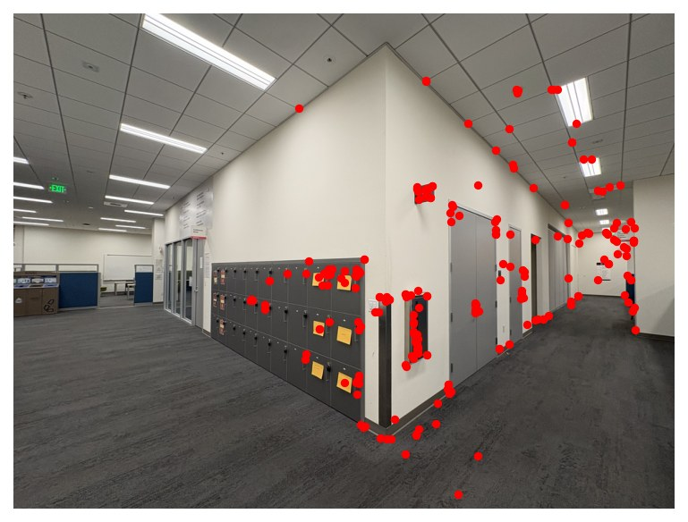

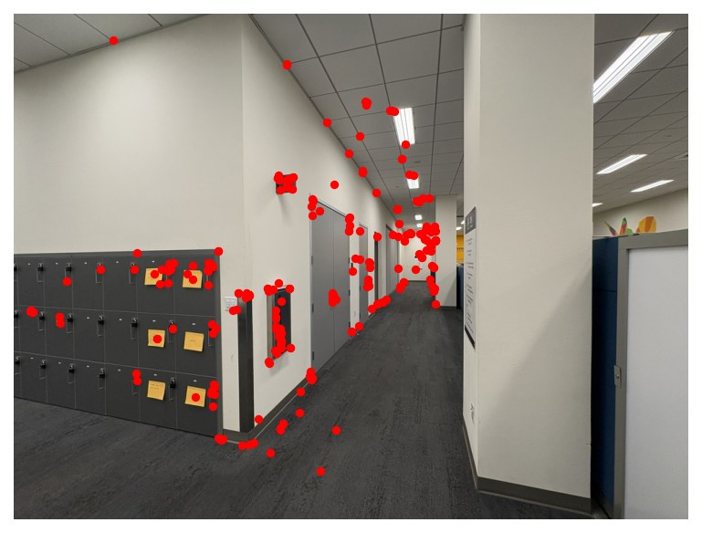
H1 (right → left) = [[ 1.32435e-01 -4.61392e-02 3.59184e+02] [-3.19101e-01 6.13121e-01 1.49874e+02] [-8.38644e-04 -6.46916e-05 1.00000e+00]]
Mosaic 2 correspondences
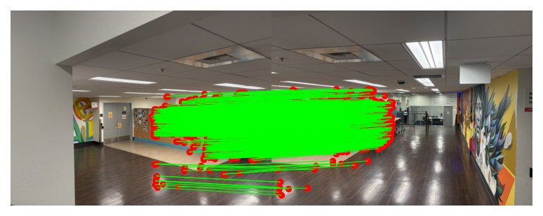

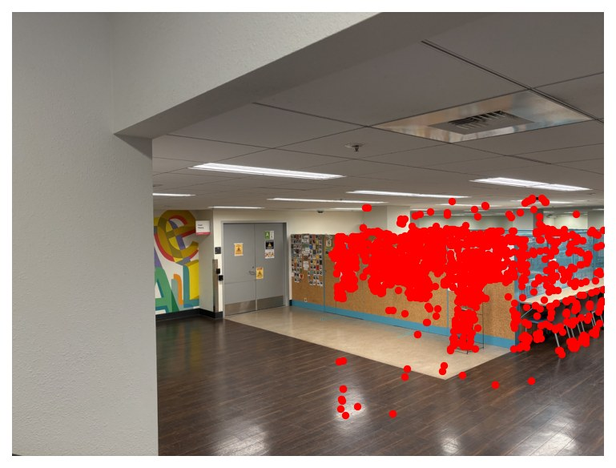

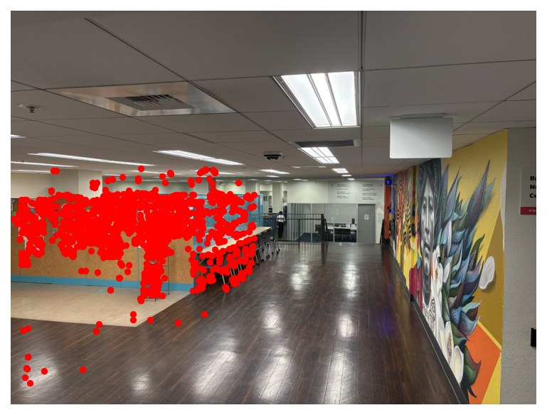
H2 (right → left) = [[ 3.33057e-01 -2.24869e-02 5.50183e+02] [-2.44792e-01 8.11472e-01 8.32626e+01] [-6.40562e-04 -3.20506e-05 1.00000e+00]]
Mosaic 3 correspondences
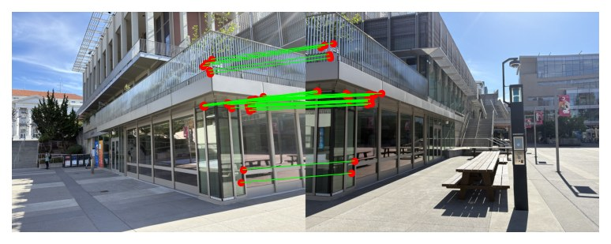

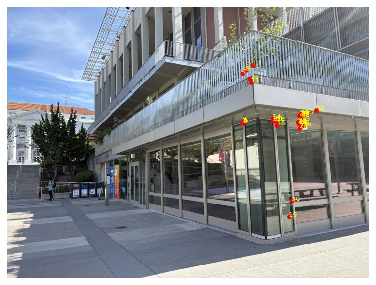

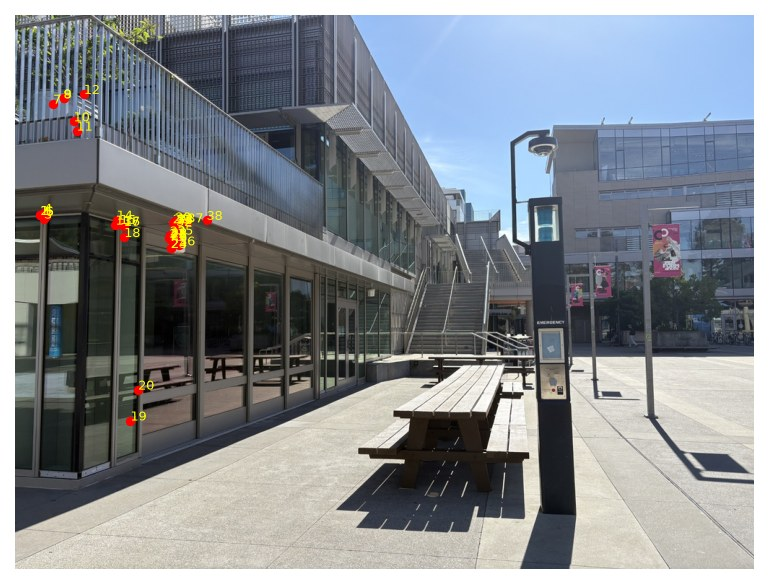
H3 (right → left) = [[ 1.81095e-01 9.43787e-03 6.18670e+02] [-3.89396e-01 7.91960e-01 1.01876e+02] [-7.78849e-04 -1.05536e-04 1.00000e+00]]
A.3 · Warp the Images
Both warps use inverse warping. I project the four corners of the input through H to find the output bounding box. Then, for every output pixel (x′, y′), I compute its source location (x, y) = H−1(x′, y′) and sample the input there. Output pixels whose source falls outside the input are marked invalid, which keeps missing pixels separate from pixels that are genuinely dark.
Nearest neighbor (warpImageNearestNeighbor) rounds (x, y) to the closest integer pixel and copies its color.
Bilinear (warpImageBilinear) takes the four pixels around (x, y). With x0 = ⌊x⌋, y0 = ⌊y⌋, dx = x − x0 and dy = y − y0, it blends them with weights (1−dx)(1−dy), dx(1−dy), (1−dx)dy and dx·dy. Both are written directly with NumPy array indexing.
Rectification
For each photo I located the four corners of a rectangular sign and mapped them, in the order top-left, top-right, bottom-right, bottom-left, to a front-facing rectangle. I computed H with computeH and warped the photo into that rectangle. The output sizes (550×1100 and 600×900) are my estimates of the real signs' proportions.
Rectification 1 · UC Berkeley Student Union directory
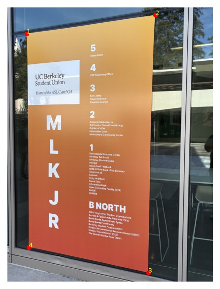
H = [[ 7.08623e-01 -7.10399e-03 -9.99407e+01] [ 9.47136e-02 6.59563e-01 -1.42818e+02] [ 2.21611e-04 -4.24219e-05 1.00000e+00]]

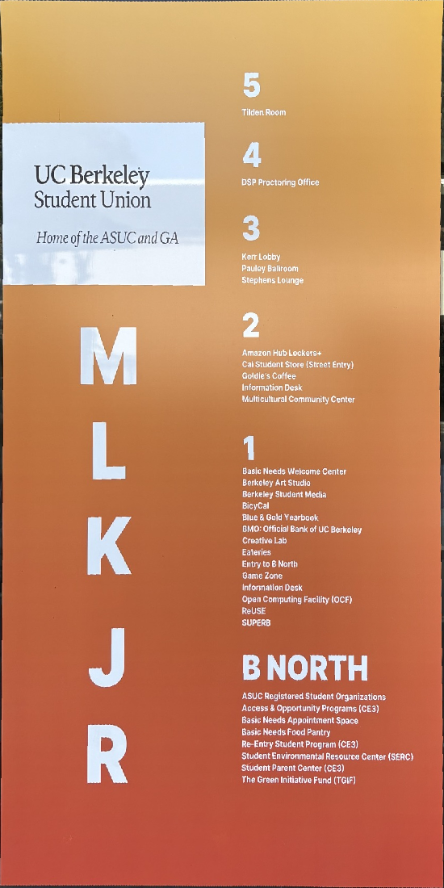

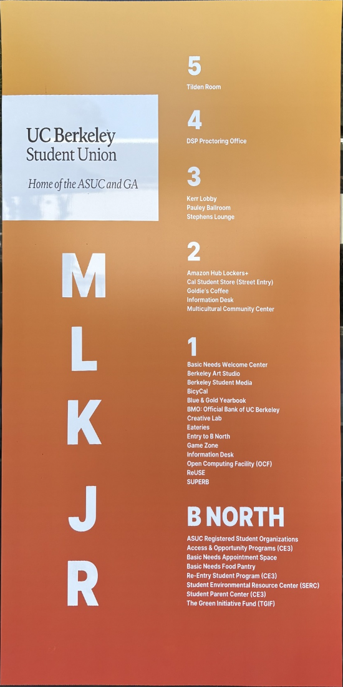
Rectification 2 · Building policies poster
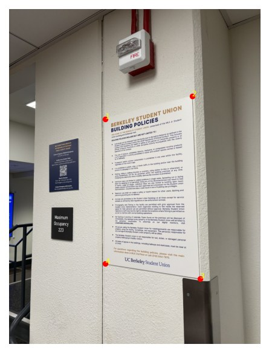
H = [[ 2.11893e+00 -4.78314e-03 -1.23848e+03] [ 4.23568e-01 1.62982e+00 -1.34345e+03] [ 7.33369e-04 1.12945e-04 1.00000e+00]]


Nearest neighbor vs. bilinear
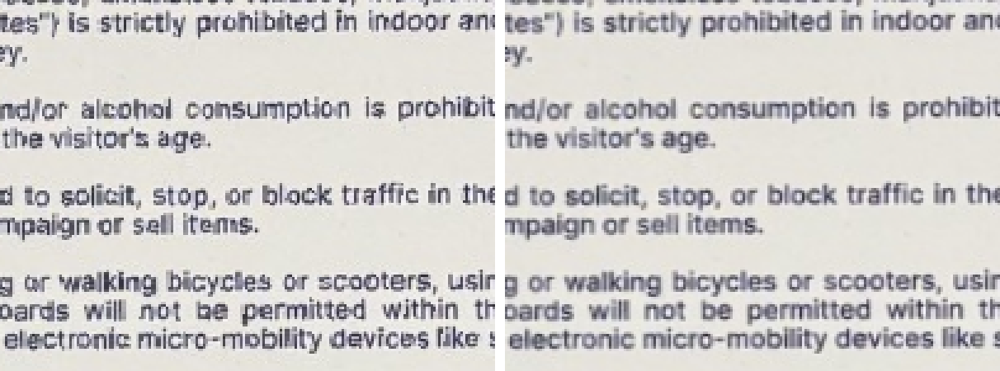
Nearest neighbor is simpler and faster, since it does one lookup per pixel and no arithmetic on colors. However, it produces blocky, jagged edges, which is most visible on the small text of the policies poster because the warp enlarges it. Bilinear interpolation reads four pixels and computes a weighted sum for every output pixel, so it costs more, but letter edges and diagonal lines come out noticeably smoother.
A.4 · Blend Images into a Mosaic
H maps the right image into the left image's coordinates. The pans between my shots are large (roughly 31 to 46 degrees), and projecting the right image entirely onto the left image's plane sends its far edge toward infinity. I therefore project both images onto a plane halfway between them. For a rotating camera H = K R K−1, so its matrix square root S, computed from the eigendecomposition of H, satisfies S·S = H and corresponds to half the rotation. I warp the left image by S−1 and the right image by S, so both land on the same middle plane.
The warped corners of both images give the bounding box of the shared canvas, and a translation shifts that box to start at (0, 0). Each image is inverse-warped onto the canvas with bilinear interpolation, together with a weight map: the distance of each source pixel from the nearest edge of its own image, and zero where that image has no data. The mosaic is the weighted average (w1I1 + w2I2) / (w1 + w2). Because each weight falls off toward its image's border, the seam is feathered across the overlap instead of switching abruptly.
Mosaic 1 · Locker hallway
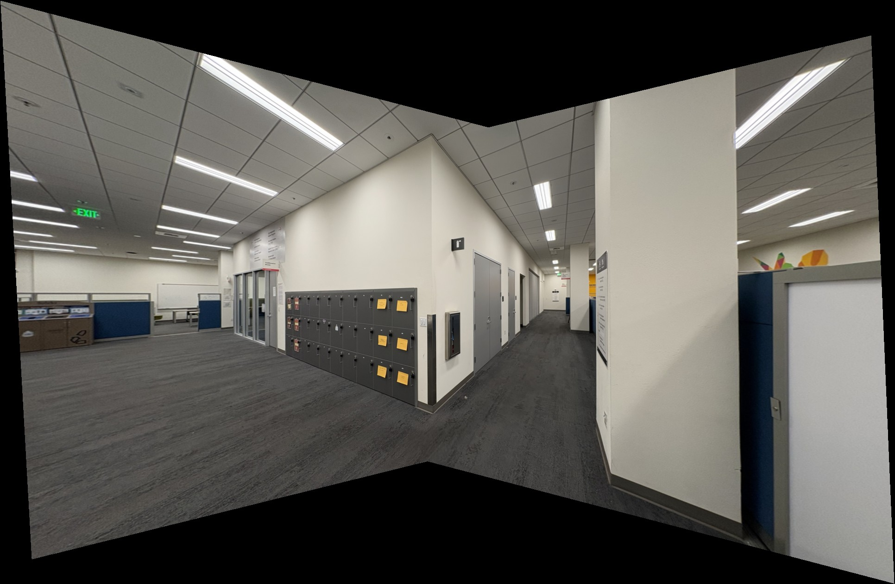
My first attempt at this scene ghosted because I had stepped forward between the two shots, so the near lockers and the far wall could not both be aligned by one homography. I retook the pair by rotating in place, and the new pair aligns cleanly.
Mosaic 2 · Bulletin-board hallway
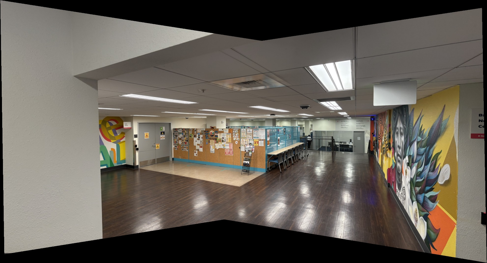
Mosaic 3 · Exterior building
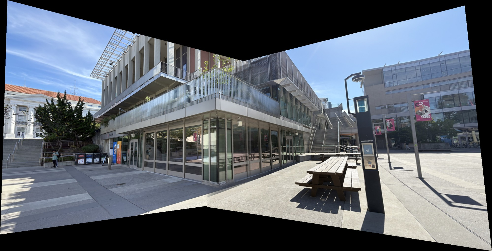